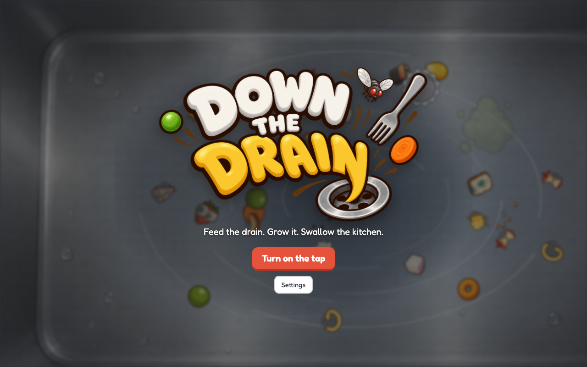

Down the Drain
A smallproblems game · press kit

About
There is a sink. There is a garbage disposal. There are things in the sink that should not be in a sink.
Hold the grinder over a scrap and it breaks after a few bites. Ground scraps pay. The slurry grows the drain. A bigger drain takes bigger things, and the things get worse: food, then dead bugs, then cutlery, then whatever is down there in the sewer.
Move the mouse over food to grind it. There is nothing to click, ever. Between rinses you spend on an upgrade board of 87 nodes that branches, with capstone pairs you have to choose between.
Six kitchens, 55 drain sizes, a boss clog and an ending. It finishes; it is not an idle game that runs forever.
Where to play
itch.io
Screenshots
Store art
Video available on request
- what can a sink eat
- the big clog
- the rats
- day one vs hour one
- just hover
- intro what is it
- intro first minute
- play early